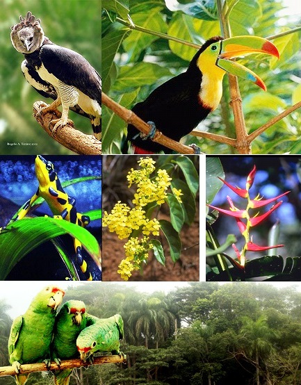
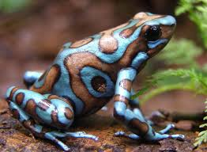
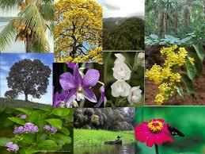

menu de navegacion
|
Panamá se encuentra entre los primeros 25 países del mundo en términos de diversidad de especies de plantas con flores. En el territorio se conocen 10,444 especies de plantas (3,3% de ladiversidad mundial !!!)
Un mayor número de especies de vertebrados que cualquier otro país en América Central y el Caribe. Panamá posee el 9% (1002 spp., 11,121 spp.) de especies de aves del planeta (especies entre residentes y migratorias, de ago-nov).
|
 |
La Fauna
de panamá es muy rica, porque cuenta con una enorme cantidad de especies. Debemos proteger a los animales silvestres, ya que son recursos naturales que nos auxilia en muchas tareas, como, por ejemplo:
-Son aliados del hombre en la agricultura
-ayudan a controlar las plagas.
-Son fuentes de alimento.
- Por sus vistosos colores y variedad, contribuyen a la recreación.
|
 |
La Flora
Panamá es un pequeño país con una diversidad biológica extraordinaria, la cual resalta aún más cuando se compara con otros países mucho más grandes. Las cifras que se indican a continuación fueron obtenidas de las publicaciones de las autoridades más reconocidas en sus respectivos grupos.
El grupo más numeroso es el las plantas con 10.444 especies, de las cuales 924 son especies de musgos y hepáticas, 938 especies de helechos y plantas afines, 22 especies de gimnospermas y 8560 especies de plantas con flores. Esta información proviene del Catálogo de las Plantas Vasculares de Panamá, publicado por Mireya Correa y colaboradoras en el año 2004. |
 |
|